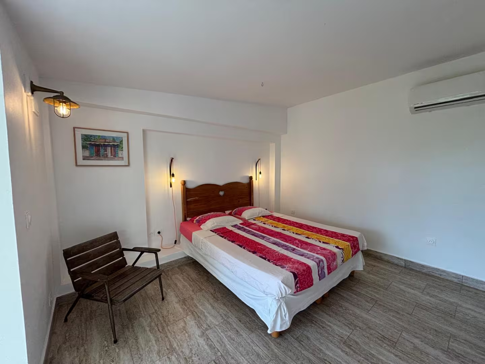

Séjourner à Grand-Bourg pour les Foulées Marie-Galantaises
Samedi 12 décembre 2026 · Grand-Bourg, Marie-Galante
La 21e édition des Foulées Marie-Galantaises a lieu le samedi 12 décembre 2026. Bò Jadin La, à Grand-Bourg, est un logement indépendant, climatisé, avec terrasse privée et jardin tropical : l'endroit idéal pour dormir la veille et récupérer après la course.
Les Foulées Marie-Galantaises en bref
Course pédestre sur route organisée chaque année en décembre par l'Office municipal de la culture et des sports (OMCS) de Capesterre-de-Marie-Galante. La première édition date de 2003. Les éditions récentes ont proposé un parcours de 15 km le long de la côte, entre Grand-Bourg et Capesterre, ouvert aux juniors, espoirs, seniors, vétérans et handisports.
Distances, horaires, lieu de départ et inscriptions pour 2026 : consultez la fiche de l'événement sur RaceUp ou renseignez-vous auprès de l'organisation.
Pourquoi dormir à Bò Jadin La
- À Grand-Bourg, ville de départ des éditions récentes
- Logement indépendant attenant à la maison de vos hôtes, entrée et terrasse privées
- Chambre climatisée, lit double 160 cm, douche à l'italienne : on dort bien la veille d'une course
- Terrasse couverte de 15 m² sur un jardin tropical, petit-déjeuner sur place (minibar, bouilloire, machine à café, grille-pain)
- Réservation en direct, sans frais de plateforme
Distances depuis le logement
- 700 m Château Murat (Habitation Murat)
- 800 m La base nautique et plage du 3eme Pont
- 1,7 km Le marché
- 1,8 km La gare maritime
Venir à Marie-Galante pour la course
Marie-Galante se rejoint en bateau depuis Pointe-à-Pitre ou Saint-François. La gare maritime de Grand-Bourg est à 1,8 km du logement. Pensez à réserver votre traversée tôt si vous venez de Guadeloupe continentale.
Questions fréquentes
Où dormir à Marie-Galante pour les Foulées Marie-Galantaises ?
À Grand-Bourg, au départ des éditions récentes. Bò Jadin La est un logement indépendant climatisé avec terrasse privée, à 1,8 km de la gare maritime.
Faut-il réserver à l'avance ?
Oui, les hébergements de l'île se remplissent vite les week-ends d'événement. Le calendrier du site indique les nuits disponibles en temps réel.
Y a-t-il des frais de réservation ?
Non. Le prix affiché est celui que vous payez, et vous échangez directement avec vos hôtes, Gwen et Vincent. Voir les conditions de réservation.